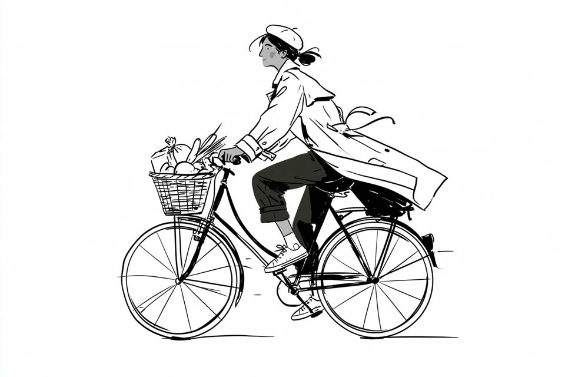

Minimalist black-ink illustration template: [subject] [action] [outfit] with brush lines and negative space (model unknown)
AES-100Aesthetic / Genreunknownby @azed_ai2026-11-23

A short reusable style template for editorial spot illustrations: expressive brushstrokes with varied line weight, selective solid blacks, no shading and lots of white space. The four outputs (cyclist, florist, reader, guitarist) show it holding across subjects.
Prompt
A minimalist black ink illustration of [subject] [performing action], wearing [outfit], clean expressive brushstrokes, varied line thickness, relaxed natural posture, simplified facial features, selective solid black shapes, minimal activity-related props, elegant hand-drawn aesthetic, contemporary editorial illustration, generous negative space, no shading, monochrome ink on a clean white background
Our Seedance 2.5 adaptation
[ADAPTED for Seedance 2.5 by Grok Bot; not the creator's prompt. Follows the official BytePlus Seedance 2.5 prompt guide and its official sd25-pe prompt-optimizer skill: parameters only on the API line (not in the prompt body), subject + action + scene, then visuals, camera (move, subject, start, direction, arrival) and sound; only the source's own exclusions are kept.] API: duration 5, ratio 3:2 (taken from the first frame), resolution 1080p (4k for a final), generate_audio true; first_frame = the AES-100 still. 【Subject】The ink-drawn figure exactly as in the first frame: same brush lines, solid black shapes and simplified face. 【Action】The figure performs one simple loop of its activity (pedals, plays, reads, arranges flowers); lines stay hand-drawn, with a slight boil between frames as in hand animation. 【Scene】The same clean white background with generous negative space; no new objects. 【Camera】Static frame; no camera move, no cut. 【Visuals】Monochrome black ink on white, varied line thickness, no shading, no colour, no 3D look. 【Sound】Soft paper and brush ambience, one sound tied to the action (a bicycle bell, a guitar strum, a page turn).
Tags: model unknown, template, ink illustration, line art, negative space, editorial, monochrome